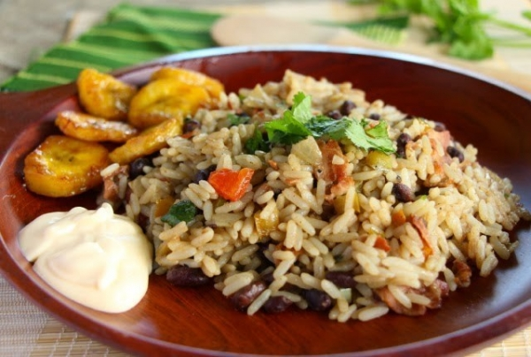

Gallo Pinto

Description
Una deliciosa receta a base de frijol negro bien sazonado con arroz, el cual puede servirse adicionando plátano frito, es un plato tradicional de costa rica y hoy te presentamos esta espectacular receta.
Ingredientes
- 450 gr de arroz
- 300 gr de frijoles negros
- 4 dientes de ajo
- 50 ml salsa lizano
Pasos
- Caliente la margarina en una olla profunda agregue el ajo, el chile y la cebolla, y sofría hasta que suelte olor. En este punto agregue el caldo de frijol, salsa y comino, déjelo 5 minutos más y agregue los frijoles y de nuevo deje que hierva
bien agregando el arroz perviamente cocido, baja el fuego y dejar allí por 10 minutos
- Por último agregue el culantro, retire del fuego y revuelva bien
- Se sirve con natilla y plátano frito